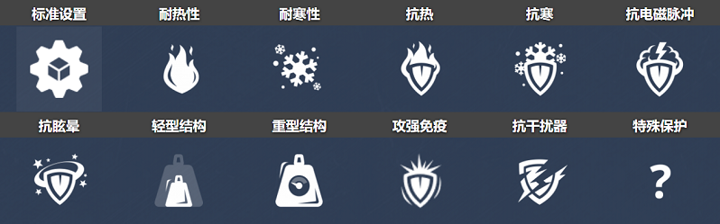
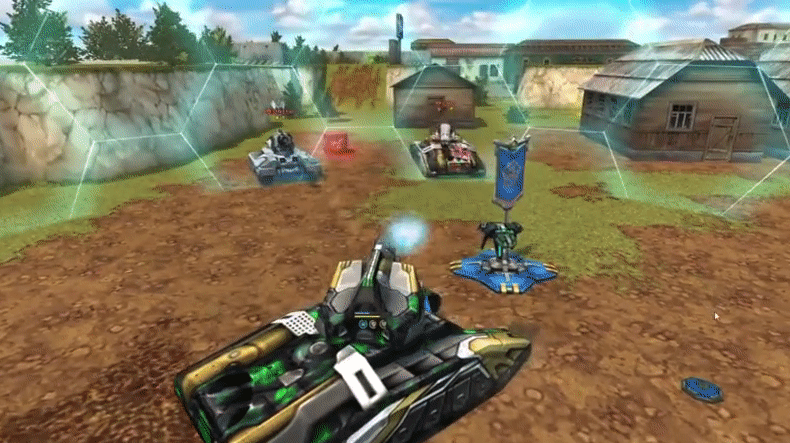
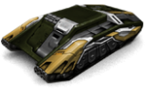
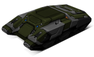

概括
泰坦，名副其实，是一台巨大而令人生畏的机器。对于这个庞大的底盘来说，获得并保持对特定位置
（例如降落区、狙击点和控制点）的控制不是问题，
其令人印象深刻的高功率和不错的速度（对于重型底盘而言）可以确保它保持这种状态：
几乎没有人可以简单地推开一个泰坦。居中的炮塔意味着反向只是向前拼写错误
- 没有一方比另一方更容易受伤。
你为这个船体选择的武器是相当重要的，这取决于比赛；
例如，泰坦/火焰炮可能不是帕尔马或杜塞尔多夫最聪明的选择。
如果你是一个喜欢强悍坦克的玩家，但仍想稍微移动一下，那么泰坦就是你要走的路。
车库中的描述
沉重的底盘。以增加动态而闻名。过速装置放下一个保护性圆顶，保护坦克和附近的盟友免受敌人的攻击。
用于最艰巨的防御任务的重型底盘。
由钛合金制成的装甲结合完美的结构和几何形状使泰坦成为即使是大口径炮塔的完美盾牌。
当它还不够时，你可以派出一个固定的磁场发生器，以一种主要的方式减少所有传入的伤害。
在圆顶的保护下，你和你的盟友可以承受来自任何炮塔的集中火力。
拥有这种底盘的玩家可以直接潜入地狱。
装备改造
过速装置
防护罩发生器

皮肤

泰坦标准

泰坦 XT

青春泰坦